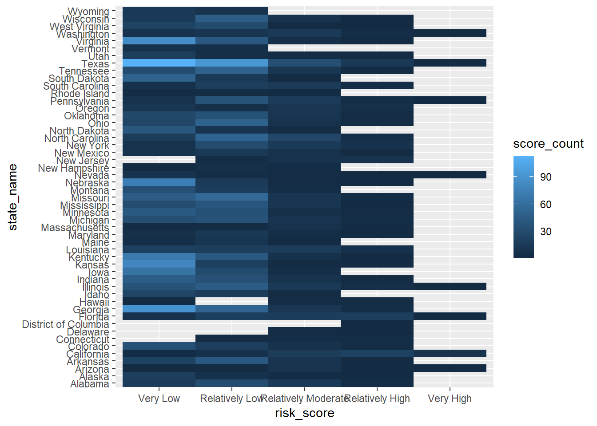
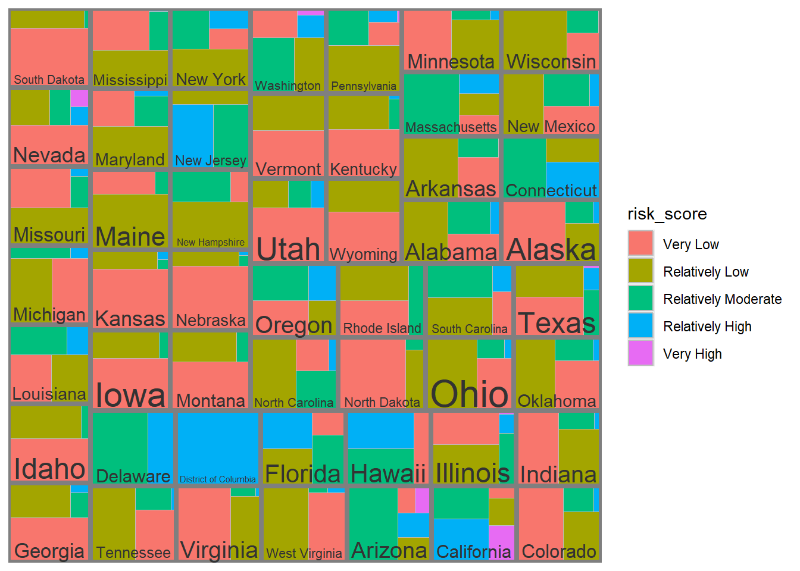
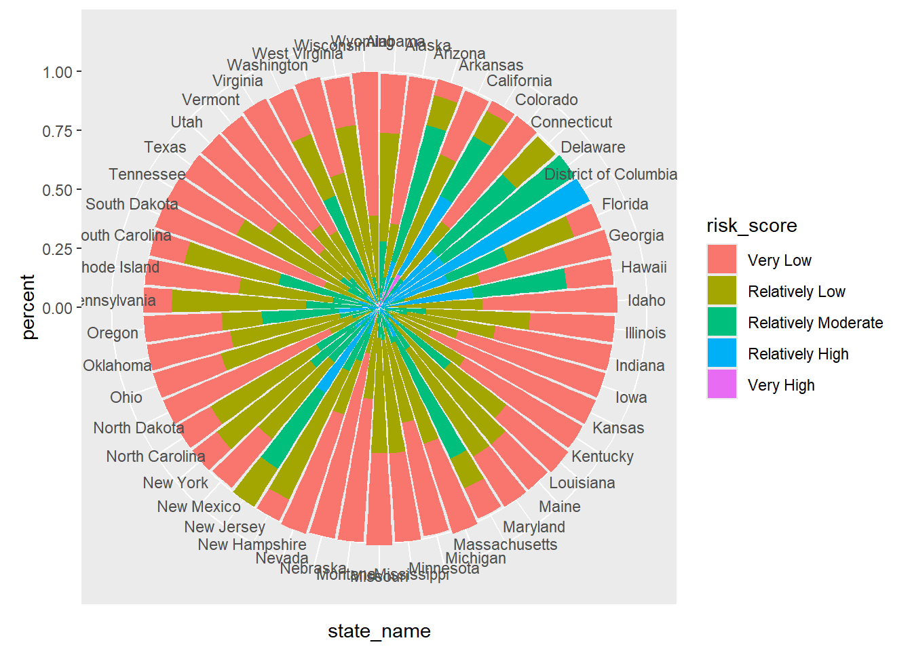
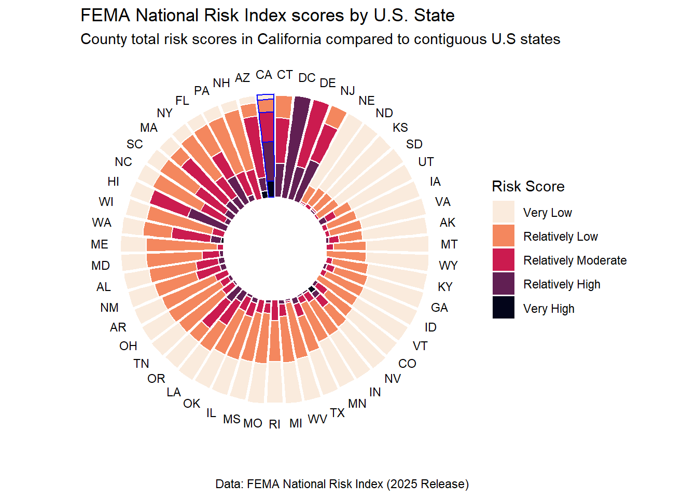

# load packages
library(tidyverse)
library(janitor)
library(here)
library(treemapify)
library(ggraph)
library(igraph)
library(viridis)
library(treemap)
library(ggraph)
library(data.tree)
library(circlepackeR)FEMA National Risk Index Scores by State
In this project, we will be working with data from the Federal Emergency Management Agency (FEMA) Resilience Analysis and Planning Tool (RAPT). This tool has more than 100 layers of social data like population, infrastructure and hazards.
We will be working with the National Risk Index (NRI) which provides information about which communities are at risk to 18 different natural hazards. Each community is assigned a risk rating based on annual expected loss, social vulnerability, and community resilience. These risk ratings are represented by percentile ranking among all communities at the same risk level. We will use NRI data to answer the following question:
“How do FEMA National Risk Index scores for counties in California compare to those in other states?”
Step 1: Read in data
nri <- read_csv(here("data", "National_Risk_Index_Counties.csv")) %>%
clean_names()Step 2: Plan Visualization
Before we begin, we can make a tentative plan about how we will build our visualization to answer our question.
Variables of interest
Inputs: Counties in California vs counties in the other continental US states
- Data type: Categorical
Outputs: Risk index scores
- Data type: Categorical
Types of plots
Because we have a categorical input and categorical output, we have a few options for visualizations that would be appropriate.
Some options include:
spider plot
heatmap
treemap
grouped scatter
lollipop
barplot
sunburst
circular packing
We will try a few of these options to see what best represents our question and our data.
Step 3: Clean and explore data
# check overview of data
glimpse(nri)
# quite a few columns (>450) we do not want to look at
# most columns are dbl or chr
# over 3000 rows, so we will definitely need to summarise
# check how many scores and their names
unique(nri$national_risk_index_rating_composite) # 5 scores, remove 'insufficient data'
# count counties in each state for each score, left with 5 rows for each state
nri_scores <- nri %>%
rename(risk_score = national_risk_index_rating_composite) %>%
filter(risk_score != "Insufficient Data") %>%
mutate(risk_score = fct_relevel(risk_score, "Very Low", "Relatively Low", "Relatively Moderate", "Relatively High", "Very High")) %>%
group_by(state_name, risk_score) %>%
summarise(score_count = n()) %>%
ungroup()
# quick plots to see what we are working with
ggplot(nri_scores, aes(x = state_name, y = score_count)) +
geom_point(aes(color = risk_score))ggplot(nri_scores, aes(x = risk_score)) +
geom_bar()Step 4: Try out different plots
Given that we have over 3000 counties and 192 total scores, 5 at most per state in the US, we can try a few plots that could be usable for that many variables before we move on to grouping more.
1. Heatmap
ggplot(nri_scores, aes(x = risk_score, y = state_name, fill = score_count)) +
geom_tile()
2. Treemap
# need to normalize counts as states have different amount of counties
nri_score_percent <- nri_scores %>%
group_by(state_name) %>%
mutate(total = sum(score_count)) %>%
ungroup() %>%
mutate(percent = round(score_count / total, 2))
ggplot(nri_score_percent, aes(area = percent, fill = risk_score, label = state_name, subgroup = state_name)) +
geom_treemap() +
geom_treemap_subgroup_border() +
geom_treemap_subgroup_text()
3. Sunburst
ggplot(nri_score_percent) +
geom_bar(aes(x = state_name, y = percent, fill = risk_score), stat = "identity") +
coord_polar()
4. Circular Packing
nri_scores$pathString <- paste("world", nri_scores$state_name, nri_scores$risk_score, nri_scores$score_count, sep = '/')
population <- as.Node(nri_scores)
p <- circlepackeR(population, size = "score_count", color_min = "hsl(56,80%,80%)", color_max = "hsl(341,30%,40%)")
pStep 5: Beautify sunburst plot
The sunburst plot depicts distribution of risk scores per state in a clear and visually appealling way. With some adjustments, we can highlight California’s scores and compare to other states.
# filter data for this plot
nri_sunburst <- nri %>%
# rename risk scores
rename(risk_score = national_risk_index_rating_composite) %>%
filter(risk_score != "Insufficient Data") %>%
# refactor for plotting
mutate(risk_score = fct_relevel(risk_score, "Very Low", "Relatively Low", "Relatively Moderate", "Relatively High", "Very High")) %>%
# calculate total counts of each risk score
group_by(state_name_abbreviation, risk_score) %>%
summarise(score_count = n()) %>%
ungroup() %>%
# calculate percentage totals to normalize for different amounts of counties
group_by(state_name_abbreviation) %>%
mutate(total = sum(score_count)) %>%
ungroup() %>%
mutate(percent = round(score_count / total, 2))
# set order level of states
levels <- nri_sunburst %>%
filter(risk_score == "Very Low") %>%
arrange(-percent) %>%
mutate(order = row_number()) %>%
select(state_name_abbreviation, order)
# join order with nri scores
nri_sunburst <- nri_sunburst %>%
left_join(levels, by = "state_name_abbreviation") %>%
replace(is.na(.), 0) %>%
mutate(state_name_abbreviation = fct_reorder(.f = state_name_abbreviation, .x = order)) %>%
mutate(california = ifelse(state_name_abbreviation == "CA", "border", "NA"))# plot!
ggplot(nri_sunburst) +
geom_bar(aes(x = state_name_abbreviation, y = percent, fill = risk_score, color = california), stat = "identity") +
# add inner circle
ylim(-0.5, 1.01) +
# define california outline
scale_color_manual(values = c("blue", "white")) +
# remove outline legend
guides(color = "none") +
# use viridis color palette
scale_fill_viridis(discrete=TRUE, option = "rocket", direction = -1) +
labs(x = "", # remove axes titles
y = "",
fill = "Risk Score",
title = "FEMA National Risk Index scores by U.S. State",
subtitle = "County total risk scores in California compared to contiguous U.S states",
caption = "Data: FEMA National Risk Index (2025 Release)") +
coord_polar() + # flip axes to polar circle
theme_classic() +
theme(axis.text.y = element_blank(), # remove all lines
axis.ticks.y = element_blank(),
axis.line.x = element_blank(),
axis.line.y = element_blank())
Conclusions
- What are your variables of interest and what kinds of data (e.g. numeric, categorical, ordered, etc.) are they (a bullet point list is fine)?
I decided to compare the total counts of each risk index score by state. While this does not depict each county individually (and since there are >3000 counties, this was not possible), and we likely lose detail about the scores by not using a numeric score value, it represents the total counties for each state and the cumulative spread of risk scores across counties. States is a categorical variable, risk scores is ordered categorical variables, and the total counts are numeric.
- How did you decide which type of graphic form was best suited for answering the question? What alternative graphic forms could you have used instead? Why did you settle on this particular graphic form?
I created a list of possible graphics that would be appropriate for my variables and their data types. After making basic preliminary plots of each, I chose a sunburst plot as I felt it represented the spread of risk scores among all states to compare to California. My other options included a heatmap, treemap, or circular packing plot.
- Summarize your main finding in no more than two sentences.
Based on this visualization, we can see that California ranks the lowest for percentage of counties with a “very low” national risk index score. California has about half of the counties above “Relatively Moderate, which visually looks lower than most states. These results could be influenced by taking the composite rating instead of a summary of the numeric score.
- What modifications did you make to this visualization to make it more easily readable?
I adjusted the organization of bars to be decreasing in “very low” counts in order to reduce the visual noise from the high number of bars. I also reversed the viridis color scheme so the lightest color was the “very low” bar to better show off the other scores. Removing all panel lines, axes, and backgrounds helped remove visual noise and create a cleaner look. Finally, adding a blue border around California was added to bring attention to those data.
- Is there anything you wanted to implement, but didn’t know how? If so, please describe.
I wanted to adjust the border around California to be thicker and only surround the outside, along with NOT having to add a white border to all other bars. Additionally, I would have preferred the legend to be horizontal on the bottom, but every time I adjusted the position I could not limit the size to be smaller than the visualization itself.